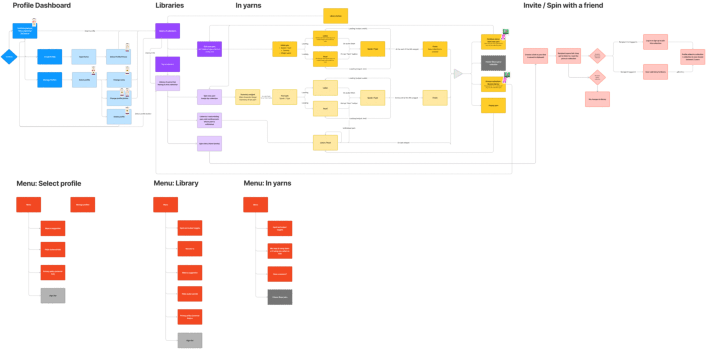
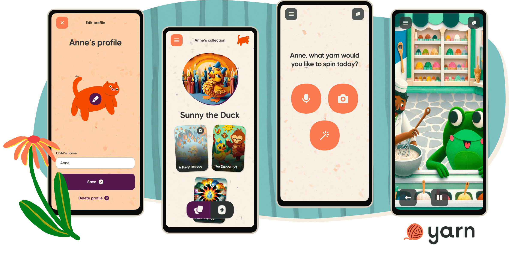

Yarn is an AI-powered interactive storytelling app for children. We had a working prototype built in vanilla HTML, CSS, JS and Python, but in order to add more features and polish the experience we needed to rebuild the app in a more structured and scalable manner. This case study follows the process of planning, designing and building the Yarn Design System (YDS).
I was the lead designer on this project, while also fulfilling frontend engineering tasks.
Having worked on design systems at other startups, I knew that introducing one to yarn would provide consistency and enable a much faster product development process.
As the project lead, I:
I proposed using a design system, and once it got signed off, I began planning the process. This project needed to fit into the larger app rebuild timeline, so I worked with the CEO, our main stakeholder, to come up with a timeframe that fit all of us.
The CEO and I had already laid out the app’s information architecture in FigJam, which helped see which components we needed to build throughout all user flows.
We believe in prioritising accessibility from the very beginning, so I proposed accessibility guidelines for the whole team to agree on. Yarn is an early-stage startup with limited resources, so we decided to focus our initial efforts on the fundamentals and defer more complex work (such as screen reader accessibility) until a later stage.
For now, we agreed to only create designs and publish code that adheres to the following (as per WCAG guidelines and the POUR principles):
I considered using an existing component library that we could update to fit our visual needs, but I decided to build everything from scratch to have more control over our components. For example, I knew we would need a microphone button with very specific technical requirements.
I took the Helsinki Design System as my main source of inspiration and decided to divide our design system into Foundations and Components.
Foundations: design tokens (colours, typography, spacing), assets (icons, background textures, images), guidelines.
Components: CTAs, form inputs, header, other components that appear in the product more than once.

Before starting the designs, I took stock of the tokens and components we already had. We had branding guidelines that included colours, icons and typography, as well as several CTAs (buttons/links) which could be reused with only minor alterations.
I started with declaring our breakpoints and minimum screen size that we were happy to support. This, alongside grids and spacing values, ensured that all of our screens were responsive.
For interactive elements I covered all relevant states. For CTAs, for example, I designed default, hover, focus and pressed states. (I did not design disabled buttons because I think they are a poor UX pattern.)
To meet our accessibility goals, I had to play with some colours, textures and font size to make sure everything was legible while also delivering what the stakeholders were looking for in terms of user delight. For example, they were adamant on using our beautiful textures for the app’s background, which made certain text difficult to read. In some cases, I made the patterns more faint, in others, I added blobs of solid colour behind text to keep writing legible.
Throughout the design phase, I liaised with the team and with the stakeholders continuously, considering any feedback from them. We caught up in our daily standup, and once a chunk of design (e.g. tokens, CTAs, menus) was ready, I had the team review it to keep the process as agile as possible.
In the engineering team, we decided to rebuild the app using React, TypeScript and Next.js, to optimise for speed and quality. As for the CSS technology, the team had differing opinions. I aimed to design the design system in a way that could work with any technology, and the components were indeed fun and fast to build using Styled Components, our first chosen library. We later ran into limitations with server side rendering, and ended up switching to Tailwind, which is optimised for Next.js.
After declaring the design tokens such as colours, typography and breakpoints, we divided the components between us, and built them continuously as we were building out the app’s pages. Developing each component in context prevented issues about sizing and spacing that may have occurred later down the line if we had been building the components in isolation. For instance, building our Text CTAs in context made me realise that I had not yet defined a maximum width, and they stretched all across the screen–it made me think more carefully about our page layout, and adjust it to align with the screen widths I had declared in the design system.
I made sure to review every PR to ensure the components’ quality and that we were keeping to the guidelines we had set out at the beginning.
Each new item was added to Storybook to create a catalogue of all reusable components with their variants. We used manual QA methods to ensure that each screen follows the guidelines we had set out at the beginning of the project.
The old app had no component library and no reusable design tokens, which made for a tedious and unsafe development process. In the new app, with the help of the design system, adding new components has been very easy. Following the guidelines and using our design tokens, it is now simple to make sure everything stays accessible and visually consistent with the rest of the app. It also helps other designers and engineers contribute, as everything is documented, which gives contributors confidence and independence.
The stakeholders were very content with having a central collection of components that they can review in one place, and they gave positive feedback about the general feel of the user flow. They were also pleased with the speed with which we rebuilt the app, which was in large part thanks to YDS.
We originally planned to set up visual diff testing for each component, which allows for a much faster and safer development process. There was not enough time to finish setting up the tests, doing so is one of our next steps.
I saw the benefits at my previous company, Habito, where my team completed a visual reskin of the entire product in just three weeks—in large part thanks to the use of a design system that incorporated this type of test, allowing us to easily catch any components or outliers that we may have missed.
Other than setting up visual diff testing, the plan is to keep the design system updated. We shall do this with regular, quarterly reviews, where every team is present (design, engineering, product). Ideally, we would set up a design system guild to have dedicated time for continuous improvements and assurance of the app’s quality and visual consistency.